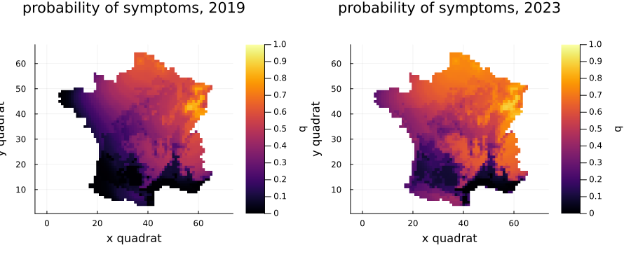
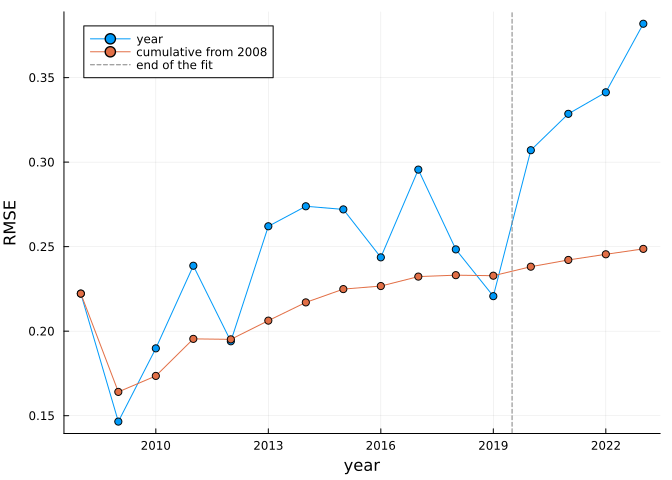
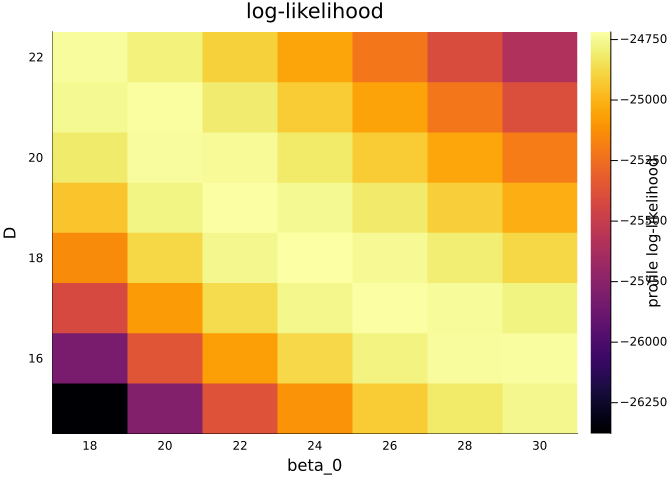

Validation and the likelihood surface
Simon Frost
Overview
The paper fits the model to the survey of 2008–2019 and holds back 2020–2023 to test it. This vignette reproduces that test at the paper’s best parameter set (Table 4), maps the forecast, and draws the likelihood on a regular grid, PEOC’s actions 5 and 8.
using AshDieback
using PlotsThe best parameter set
The paper’s θmax (eq. 14) is the sample of its AMIS run with the highest likelihood:
data = load_peoc_data()
θmax = AshDiebackParameters(; r_symp = 1000.0, r_allee = 0.0, beta_0 = 23.26, beta_1 = 0.0,
D = 18.51, S_sat = 92.0, gamma = 21.50001, C_pers = 1.0,
C_init = 0.00855, kappa = 0.056)
prob = AshDiebackProblem(data, θmax)
loglikelihood(prob)-24717.21496294487Forecasting beyond the fit
Changing final_year extends the simulation with the observed climate. Nothing is refitted:
forecast = remake(prob; settings = ModelSettings(; final_year = 2023))
sol = solve(forecast)
plot(plot(sol; year = 2019), plot(sol; year = 2023); layout = (1, 2), size = (900, 380),
clims = (0, 1))
Table 4
rmse compares each plot visit with the probability of symptoms in its quadrat, each year and cumulatively:
t = rmse(sol)RMSETable: year, observations, RMSE of the year, RMSE from 2008
2008 183 0.2222 0.2222
2009 753 0.1465 0.1641
2010 504 0.1898 0.1735
2011 620 0.2387 0.1954
2012 515 0.1940 0.1952
2013 438 0.2621 0.2062
2014 493 0.2739 0.2170
2015 520 0.2720 0.2249
2016 410 0.2437 0.2267
2017 341 0.2956 0.2323
2018 254 0.2484 0.2331
2019 132 0.2207 0.2328
2020 345 0.3070 0.2381
2021 214 0.3286 0.2421
2022 166 0.3413 0.2455
2023 111 0.3819 0.2487All of these are within one unit in the fourth decimal of the paper’s table. Two differ in that digit: the cumulative value for 2012 (0.1952 against 0.1951) and the RMSE of 2020 (0.3070 against 0.3071). The printed θmax is rounded, so such differences are to be expected. The paper’s table also has one more plot in 2020 and in 2021 than the released data. The years from 2020 were not used in the fit, and the error rises there, as the paper reports.
plot(t.years, [t.annual t.cumulative]; label = ["year" "cumulative from 2008"],
marker = :circle, xlabel = "year", ylabel = "RMSE")
vline!([2019.5]; label = "end of the fit", linestyle = :dash, color = :gray)
The likelihood on a grid
likelihood_grid evaluates the log-likelihood on a Cartesian product of parameter values, holding the rest at their values in the problem. It uses threads when Julia has them. Here are β₀ and D, the strongly correlated pair:
grid = likelihood_grid(prob, (; beta_0 = range(18, 30; length = 7),
D = range(15, 22; length = 8)))
best_parameters(grid)([1000.0, 0.0, 24.0, 0.0, 18.0, 92.0, 21.50001, 1.0, 0.00855, 0.056], -24718.651008031204)plot(grid; x = :beta_0, y = :D, title = "log-likelihood")
The ridge from high β₀ and low D to low β₀ and high D is the correlation of −0.97 in the paper’s Table 3: more spores are offset by slower diffusion.
With more than two axes, plot shows the profile, maximised over the others, and profile_likelihood returns it. PEOC’s own grid (peoc_grid_axes()) has 630 000 points, which is several hours’ work on one machine.